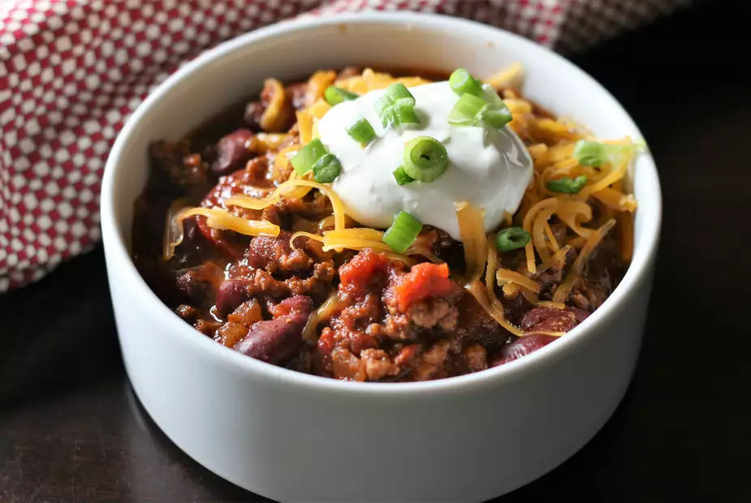

Tequila Chili

Tequila Chili
This simple and quick one-pot chili has great flavor and is nice and meaty.
Ingredients
- 1 pound ground beef
- 1 (14.5 ounce) can italian-style stew tomatoes
- 1 (15 ounce) can light red kidney beans, drained
- 1 onion, chopped
- 1 clove garlic, minced
- 1 1/2 fluid ounces tequila
- 1 table spoon chili powder
- 1 1/2 teaspoons ground cumin
- 1 teaspoon salt
- 1/2 teaspoon cayenne pepper
Recipe Instructions
- Brown the ground beef in a large pot over medium heat
- breaking it up with a spoon while it cooks; drain
- Stir in the tomatoes, kidney beans, onion, garlic, tomato sauce, tequila, chili powder, cumin, salt, and cayenne pepper
- simmer 20 minutes
Nutrition Facts
Per Serving:379 calories; protein 27g; carbohydrates 30.2g; fat 14.4g; cholesterol 69mg; sodium 1405.5mg.